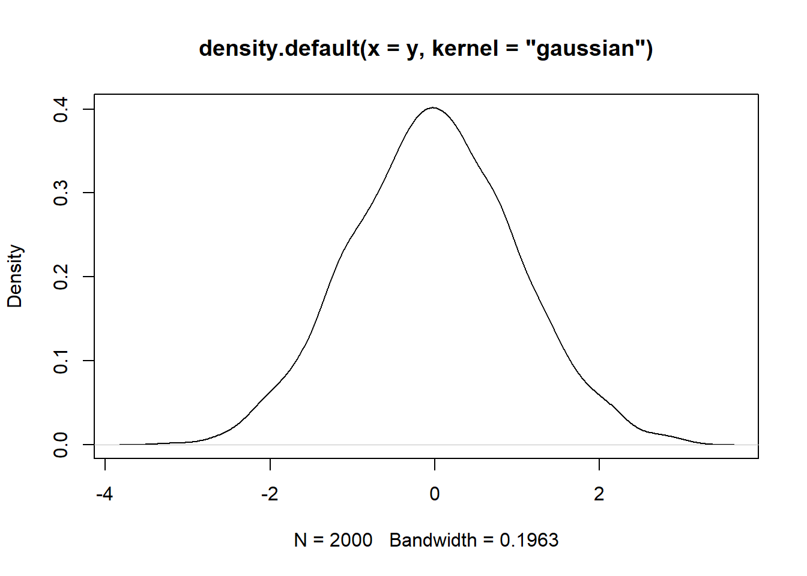
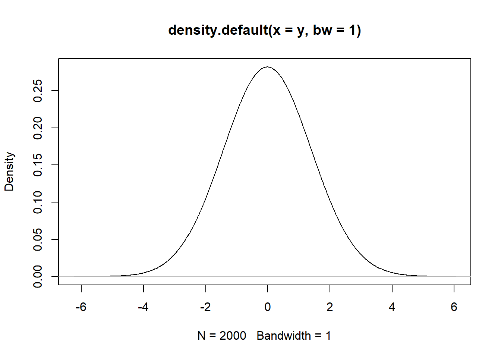

Se simulan 2000 observaciones
y <- rnorm(n=2000)
res <- density(y)
Con las observaciones creadas se crea el grafico de densidad y el núcleo de suavización.
plot(density(y, kernel='gaussian'))

Cambiando el ancho de la banda se obtiene
plot(density(y, bw=1))
